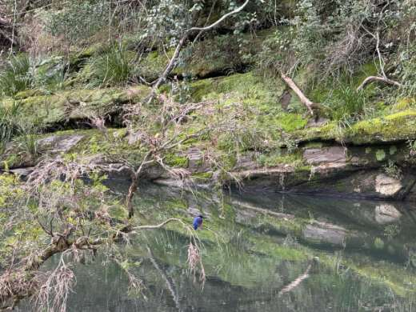
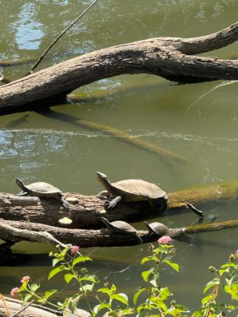
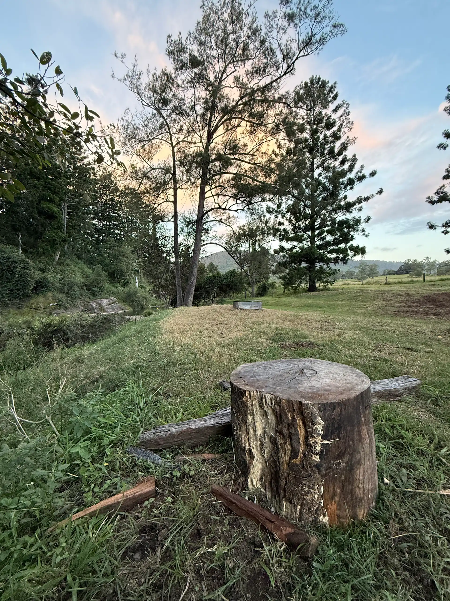

04
Twin Pines, in pictures




The Sites / Site 04
100% would return · 9 reviews
Your own quiet corner of the Coomera River
The site
Our riverside campsite on the Coomera is one of our larger sites, with plenty of room to spread out and the river right beside you. It’s a favourite for swimming, paddling and watching turtles move through the shallows. A pull-through track makes setting up your van nice and easy
Accessible to most vehicles, weather permitting, and completely private. Come visit the local wildlife that call the river home.
Bring the canoe or paddle board. The Coomera here is clear and slow, perfect for a lazy float or just sitting in the shallows soaking up the serenity.
At this site
Guest moments at Twin Pines


There are no toilets, showers or drinking water on the land — this site is for self-contained campers. Bring your own water and a way to go.
Campfires are welcome and Firewood is available to order, ready and waiting at your campsite when you arrive. Total fire bans are observed.
Dogs are encouraged but this is a working farm — keep them close and under control around the cattle at all times.